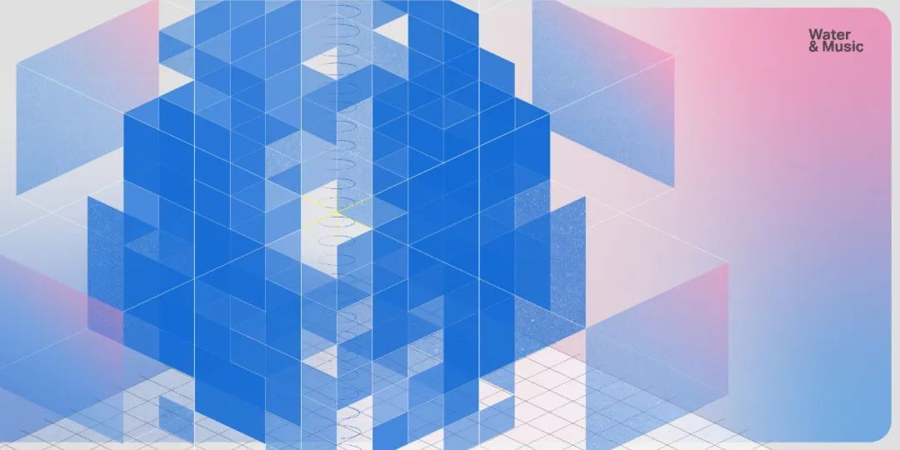
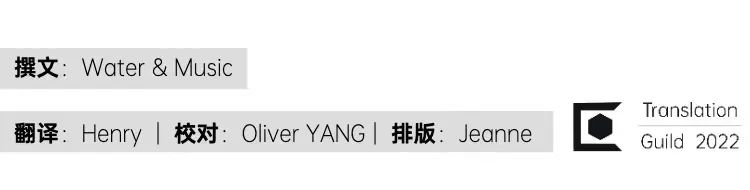
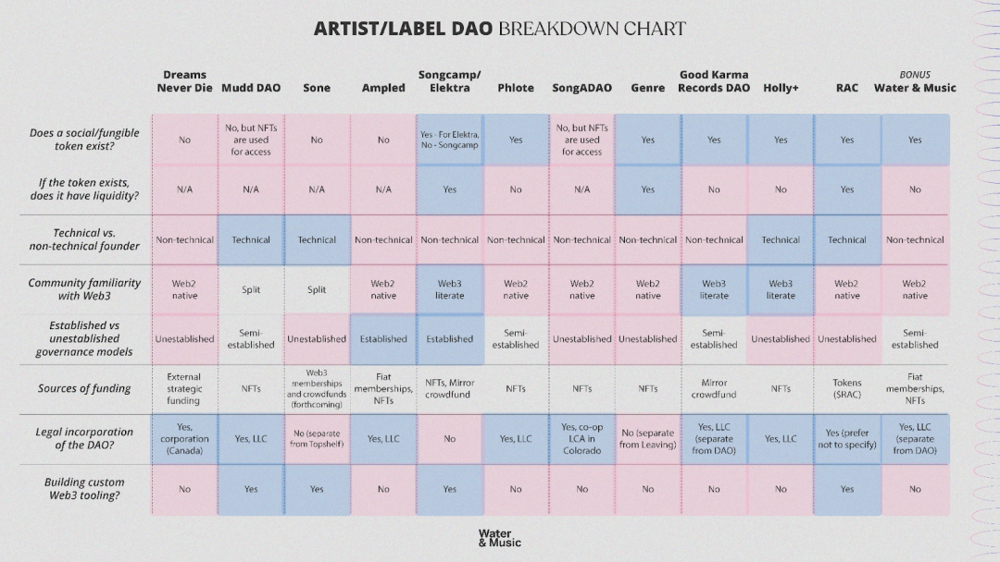
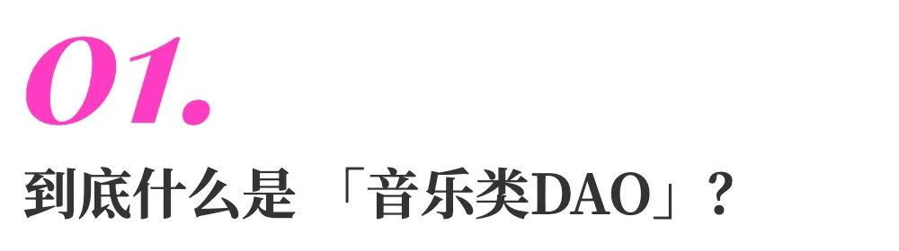
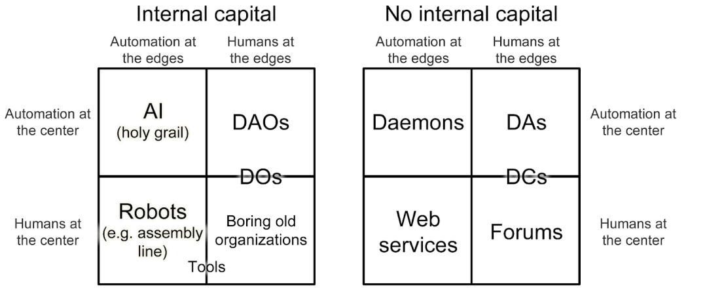
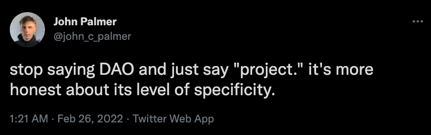
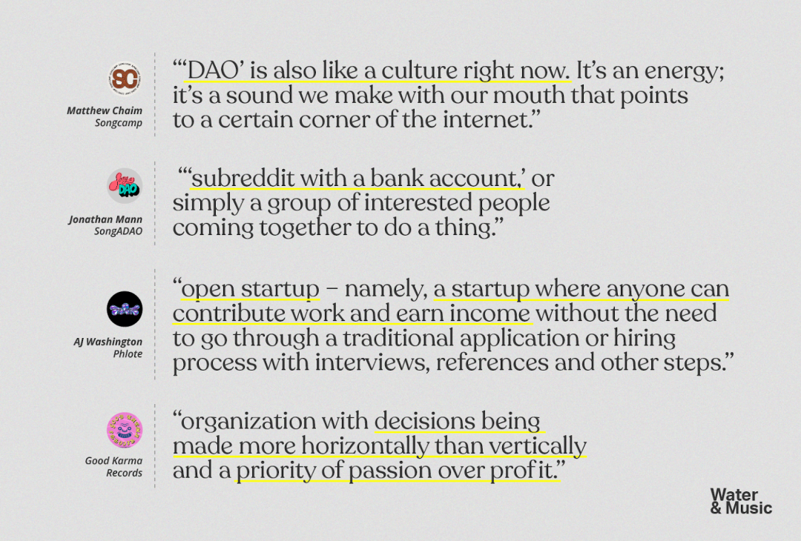
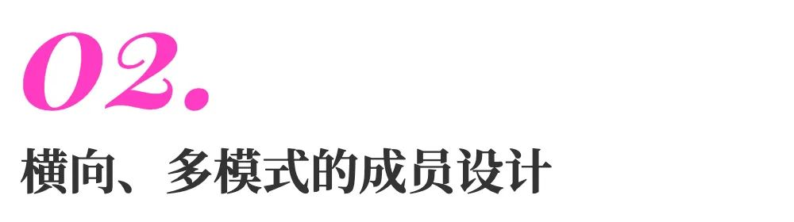
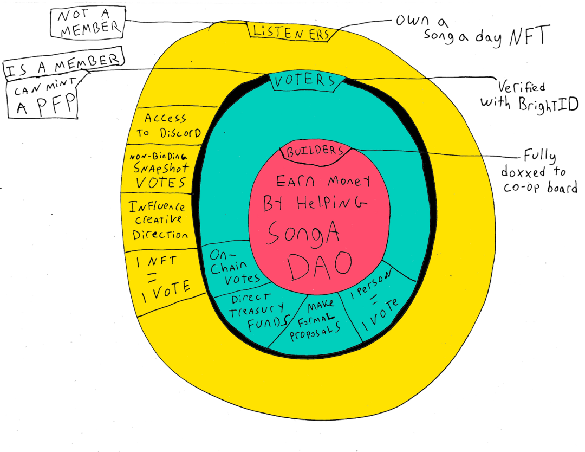
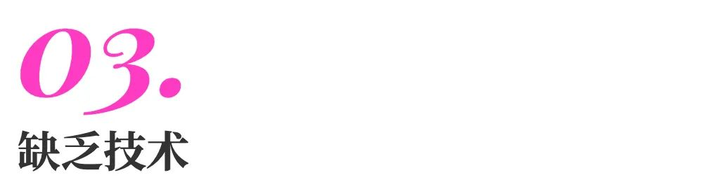

译者序：
Water & Music 社区通过长达两个月的采访，从超过 15 个各种音乐类 DAO 的领导人那里了解并整理了整个音乐类 DAO 的现状。不同于协议类的 DAO，音乐类 DAO 的领导人普遍认为 DAO 这一形式对于音乐社区更重要的意义是社交层面，而非技术层面。
现在有 30 多个在线音乐和创作者社区自称为去中心化自治组织（DAO）。在过去两个月里，我们采访了超过 15 位来自各种音乐类 DAO 的领导者，他们的 DAO 使用了传统音乐行业里没有的 Web3 工具和策略。我们想了解，他们如何看待这个全新框架带来的各种可能性。最终我们发现，与我们交谈过的领导者普遍认为，DAO 的概念并非是技术基础设施，而是一个抽象的社交信号，用它可以动员线上社区。此前许多以协议为中心的 DAO ，或以通证为中心，或依赖链上的某种精神，而他们的方法和观点与之有很大的不同。Water & Music 社区在过去两个月完成了《音乐和 Web3 领域现状》系列研究报告，报告一共包含五个部分，这是其中第一部分，也是我们在 12 月的第 1 季报告的后续。此次研究的贡献者列于本页底部，按角色排序。想了解我们报告的最新情况和我们的贡献者完整名单，请访问 stream.waterandmusic.com。为了支持我们的链上工作，你可以购买 本研究的 NFT 封面，这将使你获得 Water & Music 社区的终身会员资格。音乐行业对 Web3 未来可能性的认知正在迅速发生改变。即使音乐 NFT 的生态系统遭受了猖獗的诈骗行为和欺诈指控，但是在 Snoop Dogg 和 Steve Aoki 等主要明星的支持下，音乐 NFT 还是得以继续发展。但是，正如我们在第 1 季报告「面向艺术家的音乐 / Web3 工具现状」一文中所述，主要的音乐 / Web3 机会并不在于短期利润最大化，而在于维持长期的社区和文化。一些初创公司正在兴起，他们尝试围绕音乐类通证建立更可持续的社区体验——无论是采取 Web3 原生粉丝 / 社区奖励的形式，还是采用版税共同投资结构的方式，或开源、公益的方式来建立 Web3 音乐产品。音乐社区围绕着一个共同的目标动员了起来，并通过对 Web3 原生资本和工具的共享而体现出来，这是连接这些新兴实用形式的底层。这种分布式的模式在传统 Web2 音乐产业中是不可能的，而且它也不会对管理它的机构产生吸引力。越来越多的这些 Web3 原生音乐社区正在自我认同为去中心化的自治组织（DAO）——这一趋势很可能指出了可媲美 NFT 的下一波音乐 / Web3 体验方面的投资潮流。值得指出的是，即使是今天最主要的 DAO 从业者，对什么是「DAO」也没有一致的看法——有关这一点，我们将在后面深入探讨。但就目前的业界场景而言，这些自称的 DAO 有一些共同的隐蔽特征，包括成员资格、融资和治理活动等。这些活动通过通证体现，广大公众可以在区块链上透明地查看。DAO 提供了更扁平的组织结构，在 Web2 音乐产业关注财务透明度、平等和数据收集做法的背景下，这是音乐社区动员起来的强大社会力量。最近，像 Epic Games 收购 Bandcamp 这样的新闻引起了独立音乐社区的担忧，他们担心 持续的行业整合 和把关机制会将新兴或边缘化的声音拒之门外。唱片工业行业的资金流动仍然复杂而不透明，流媒体的利润率对 99%的艺术家来说很低，低到足以令人望而却步。从更积极的角度来看，许多 DAO 中采用了通过贡献获得权益的模式，或称为「工作量证明」，这与全球的许多粉丝文化参与其中有直接关系。简而言之，任何人都可以通过做出贡献而不是持有一定数量的资本，成为 DAO 的有意义的参与者，甚至是利益相关者。音乐类 DAO 的概念给人以张开双臂的感觉，而与此相反，音乐 NFT 却继续在全球范围内给人根深蒂固的、与一夜暴富有关的负面印象，这些负面印象让受众意见极其对立。这两者的脱节使得音乐和 Web3 的社区和文化建设之路至今踟蹰不前，但实验的时机已经成熟。根据我们正在制作的 音乐 / Web3 数据看板，已有超过30个在线音乐和创作者社区自称为 DAO 。这些自称的 DAO 有各种形式。比如：- NoiseDAO 和 Morii Music 是专注于支持 Web3 原生艺术家和音乐 NFT的投资类 DAO。
- MODA DAO 和 CreateDAO 是面向行业的 DAO，旨在改善音乐数据 / 工具。
- Holly+ 和 The Song That Owns Itself 是围绕艺术家知识产权的共有权益或共同管理 DAO。
如今是音乐产业与 Web3 两者开始融汇的关键时刻，也正是调查音乐类 DAO 迅速崛起的最佳时机。通过关注艺术家和唱片公司社区如何寻求使用 DAO 基础设施来重塑他们的社区参与、融资和决策方法，我们可以推测整个音乐类 DAO 领域的动力来源，并减轻其可能遇到的障碍。在两个多月的时间里，我们采访了超过 15 位不同的音乐类 DAO 领导人，了解他们在各自组织的 Web3 框架中可以完成什么。这一提炼过程旨在解开 Web2 音乐产业的障碍，并发现这些 DAO 领导人在实现其愿景的道路上仍然存在的重大痛点。与我们的大多数研究一样，这个项目的灵感始于 2021 年 12 月下旬 Water And Music 的 Discord 服务器中的一条信息 —— 来自 W&M 的创始人 Cherie Hu 。当时，我们发现我们社区的几个成员正在建立艺术家 / 厂牌类 DAO 。然而，他们很难找到具体的资源来了解其他 DAO 到底是如何建立和运作的，特别是沿着社区管理、治理和通证经济学这条主线。因此，我们开始自己创建这样的资源作为回应。我们在 Discord 服务器中建立了一个研究项目，用于艺术家 / 厂牌类 DAO 技术栈的探讨，该项目建立在我们第 1 季关于 面向艺术家的音乐 / Web3工具现状 的研究之上。在咨询了社区后，我们得出结论：由于 DAO 赛道的快速发展，每周一次的系列采访比两个月内的单一长篇报告更有价值，更能捕捉到音乐类 DAO 的动态。（这种形式与我们在 第 1 季回顾文章 中提出的想法一致。为了提高人们对我们研究的认识，我们采用了一种更快迭代的出版节奏）。最初，我们认为我们对音乐类 DAO 的研究将以技术为中心（就像更广泛的 DAO 赛道一样），专注于绘制音乐类 DAO 的工具市场、跟踪这些 DAO 的通证价格和资金规模等任务。然而，最终的结果是对音乐类 DAO 的定性研究远远多于定量研究。这种转变与我们采访对象的描述是一致的——他们理解 DAO 在音乐产业中的作用，主要在于文化，而不是技术或金融。值得注意的是，我们以社区为导向的研究方法论可能影响了这种定性的产出。为了准备采访，我们与我们的社区成员合作、集思广益，制定了一个 广泛的初步问题清单，涵盖了包括社区设计、治理策略和财务管理在内的各种主题。最终，我们社区的 13 位采访者二人一组，在八周内采访并介绍了 11 位艺术家 / 厂牌类 DAO。撰稿人每周三晚上在我们的 Discord 服务器上进行访谈总结，并经常邀请 DAO 领导人来为我们的发现提供额外的背景说明。在过去的两个月里，这些语音会议成为我们研究社区的一个核心「仪式」。从 2022 年 1 月 19 日开始，每周我们都会按照以下顺序，发布 Water & Music 会员专享的采访摘要：2. Sone (spinoff of Topshelf Records)8. GENRE (spinoff of Leaving Records)这当然不是一份详尽的音乐类 DAO 清单。不过，我们认为它还是代表了艺术家和音乐组织考虑建立 DAO 的一般动机——从生于 Web2 但是想拥抱 Web3 的唱片公司，到 Web3 原生的链上生成艺术实验，再到介于两者之间、持观望态度的吃瓜群众。在选择名单时，我们优先考虑那些以艺术家 / 厂牌类社区为中心（相对于区块链协议等社区而言）、并积极自我认同为 DAO 的项目（相对于拥有社交通证但不认为自己的社区是「DAO」的艺术家而言）。其实，拥有一个活跃的通证并不是列入这个名单的硬性前提条件，因为我们试图捕捉的重点是关于「何时和为何启动一个 DAO」以及「如何快速行动」的全部决策范围。下图显示了我们采访过的艺术家 / 厂牌类 DAO 在几个变量上的不同之处，包括法律地位、资金来源、既定的治理模式、社区对 Web3 的熟悉程度等等。(更详细的表格，包括技术栈、痛点和教训等更多信息可在此查阅 ）。
本研究项目的许多贡献者都是多个 DAO 的积极贡献者或通证持有者 —— 包括我们采访过的几个 DAO ，如 Sone、SongADAO、Leaving Records / GENRE 和 Songcamp，还有其他通证化社区，如 Friends With Benefits 、 LNRZ 和 Daniel Allan & Friends 。
Water & Music 的立场是，与某个社区有隶属关系不应影响其写作。相反，我们认为，进入一个社区可以对该社区的思维和行为有更细致的了解，而这可以产生更好的写作和批评。所以，W&M 的政策是这样的：我们要求所有社区贡献者主动披露，他们与我们所研究的组织之间的任何可能的关联。我们已经确认目前的社区采访者都没有直接受雇于或隶属于他们被指派采访的平台。我们的主动披露政策旨在确保我们对受众尽可能透明，并确保我们的研究人员与研究对象保持适当程度的距离。
在我们对音乐类 DAO 的采访中，最重要的发现之一就是大家对「DAO 到底是什么」缺乏共同的基本概念。这个问题在所有的 DAO 社区中都广泛存在，毕竟 DAO 本身的历史连十年都不到。
这里插入一段简要历史：2014年，以太坊联合创始人 Vitalik Buterin 首次提出了 DAO 的概念，这反映了当时 Web3 生态系统仍高度以协议为中心的性质，即「自动化在中心，人类在边缘」。当时他提出的愿景是：虽然 DAO 仍然需要人类来执行和监督一些特定任务，因为在这些任务上计算机无能为力，但是激励和奖励贡献者的协议是「写在代码中，并在区块链上强制执行的」。
图片标题：Vitalik Buterin 对所有组织的 分类，依据是其内部资本、自动化程度和「以人为本」。
经过 8 年高速发展，如今 DAO 的格局已经发生了相当大的改变。当然，规模最大的 DAO （按财库规模、治理通证持有人数量和提案数量 衡量 ）仍然是围绕高技术含量的区块链 / DeFi 协议和应用程序建立的，比如 ENS DAO 、 Aave 、 Uniswap 、 Compound 和 Olympus 。此外，这些组织提出的大多数 DAO 定义仍然是高度技术性的。- 以太坊官方网站上对 DAO 的定义 提到了链上完全公开的组织活动记录，以及一个治理系统。这个治理系统需要成员的输入来实现某种变化，并在没有任何外部介入的情况下，自动执行这些变化。- DAOstar 是一个为 DAO 开发 共享元数据标准 的组织，它根据三个变量来构建他们的标准：成员（如一组钱包地址）、行为（如一些可能的智能合约行为）和提案（即成员与之互动的对象，如果得到执行，则成为行为）。- 多链智能合约协议 Juno 将 DAO 定义为「具有易检查状态的可编程组织」。但在最近几个月，艺术、文化和娱乐领域推动了 DAO 进入主流视野。PleasrDAO，一个由视觉艺术家 pplpleasr 创立的专注于收集有价值的数字艺术品的 DAO ，在 2021 年 10 月成为美国说唱乐队 Wu-Tang Clan 专辑《*Once Upon A Time in Shaolin》*的 单一拷贝的所有者，成为全国头条。然后在 2021 年 11 月， ConstitutionDAO 筹集了4700万美元，试图在苏富比拍卖会上赢得美国宪法的一个原始副本。尽管他们最终输掉了拍卖，但这一壮举让许多人第一次了解到 DAO 的概念，并成功地吸引了超过 15000 名陌生网友汇聚在一个共同愿景下。2022 年 3 月，《纽约时报》对文化类 DAO「Friends With Benefits」进行了报道，称该组织是一个独特的「加密货币社交俱乐部」。这些 DAO 和许多文化类 DAO 遵循大致相同的过程：先是在 Discord 服务器、 Discourse 论坛或 Telegram 群组中形成一个数字原住民社区，这些社区围绕着一套强有力的共同目的、价值观以及兴趣凝聚在一起，但不一定有明确的 路线图 来说明他们将如何实现。虽然这种新兴的组织发展方式可能非常能适应文化发展的速度，但另一方面，它也促使许多社区在没有通证或去中心化治理结构的情况下，就开始自称为「DAO」。在没有适当的基础设施的情况下，急于接受去中心化的思维方式，会让许多在 Web3 方面有更多技术基础的从业者感到沮丧。
这种紧张关系的核心在于，DAO 的社会、技术和金融角色之间存在根本冲突。首先我们要记住，启动 DAO 的是人，而不是计算机——因此，一个 DAO 的开始阶段和它的相关描述都受制于其创始人的先前知识、影响和偏见等因素。与最大的那些协议类 DAO 形成鲜明对比的是，我们采访的大多数音乐类 DAO 都更强调社交和财务方面，而不是技术方面。他们认为「DAO」这个词更像是一个社交层面的信号，这个信号向外传递的信息主要强调 DAO 在社区建设和共享融资方面的增值作用，而不是关注通证或区块链。一些亮点：
我们在采访中听到的为数不多的表现出技术倾向性的音乐类 DAO 是那些以技术本身作为关键增值点的 DAO 。毫不意外，这些 DAO 也总是由对 Web3 拥有深刻技术知识的人创立。一些例子如下：- Julian Mudd —— Mudd DAO 的创始人，希望为音乐家创造开放的基础设施，在链上创造他们自己的生成艺术作品——他们将 DAO 定义为「一种结构和手段，决策权掌握在多个人手中，并由技术推动」。- Mat Dryhurst —— Holly Herndon 的创意技术专家和合伙人，也是 Holly+ DAO 的主要贡献者之一 ——将 DAO 定义为「使用加密身份对财库或资产进行共享治理」。音乐类 DAO 的整个赛道还处于发展早期，试图将 DAO 的僵硬定义强加给这些新兴社区，可能是本末倒置的。然而，标准化的框架也是必要的，这可以使 DAO 能被更多的人所使用（特别是在搜索、发现和工具方面）。关于这点，目前在音乐 NFT 的世界里正在进行一个 讨论，音乐 / Web3 的创始人们正在推动元数据的标准化，希望将这作为围绕 NFT 建立更通畅的发现和协作体验的前提条件。虽然 DAO 的社会信号层面倾向于强调一群人想要做什么，但技术层面在定义一群人到底如何行动，以及在什么上行动仍然至关重要。无论我们研究中的艺术家 / 厂牌类 DAO 如何定义自己，很明显，几乎所有的 DAO 都会在短期内优先考虑文化和社区建设，以此作为长期盈利和可持续发展的希望之路。此外，他们认为持续的社区参与和具体的文化产出（例如签下和发布新兴艺术家的新作品，或为音乐社区创造公共物品），对维持他们的 DAO 比精通区块链技术更重要。
我们将在下面进一步讨论，当涉及到衡量 DAO「成熟度」的某些变量时，音乐类 DAO 与整个 DAO 生态系统的其他部分相比是落后的，例如链上治理活动、资金规模和自定义 Web3 工具等。但是，音乐DAO可以说是遥遥领先的地方，也是音乐行业以外的其他DAO可以汲取灵感的地方——在于社区建设的新颖和周到的方法。特别是我们采访的许多音乐类 DAO 对模糊「艺术家」、「粉丝」和「贡献者」之间的界限有着强烈的愿景，这描绘了一幅沟通方式和决策结构更加横向而非纵向的未来。此外，由于对潜在的过度金融化的社交通证持批评态度，我们采访的几个 DAO 都正在探索更加有流动性的、多通证（甚至是混合的 Web2 / Web3 ）的成员资格方式。这些方式倾向于将社交 / 治理通证、NFT 和法币支付等方式相结合。可以肯定的是，粉丝文化作为一种参与性文化并不新鲜。自从21世纪初互联网（在本文中称为「Web1」）出现以来，从 在线论坛 到 众筹，再到 付费会员制，在创意表达和社区建设方面，乐迷一直是新技术和新商业模式的早期使用者。今天，在横向的、强调参与性的创意社区之上已经出现了整个企业甚至完整的产业，不仅在音乐领域（如 K-pop 粉丝军团），还包括在文学（如 Wattpad ）和电影（如动漫 cosplay ）领域。我们采访的许多 DAO 都希望把这种参与性的文化遗产带到 Web3 中去——用通证作为一种手段来缩小艺术家和粉丝之间的距离。这样，不仅是在文化上体现了接触和合作，在经济上也可以更广泛地分配利润。- 在Mirror上的官方帖子中， Good Karma Records 宣称，「现在是粉丝和他们所支持的艺术家之间互相融合的时候了…… Web3 是艺术家成长的地方，而粉丝是他们成长的真正一部分」。
- Songcamp 的团队有意将他们的社区设计成一个「让粉丝成为朋友」的社区，以对抗他们所不喜的主流音乐文化发展方向，用 Will Juergens 的话说，「人们只是去消费，却没有被引导更多地去参与」。
- 艺术家 RAC 正在 围绕他的 $RAC 通证设计社区，以便在短期内促进粉丝在他的 Discord 服务器中进行多向互动，并确保他的社区能够以一种与平台无关的、去中心化的方式长期维持下去。
在 Web2 和 Web3 的粉丝文化之间，你可能会看到一个核心区别，那就是前者的「贡献者」通常更多的是受内因而非外因的驱动。换句话说，社区对这些贡献并不存在通证形式的经济回报；相反，其成员的动机是更抽象的利益，比如有机会直接与明星互动，或与互联网上的陌生人因共同的兴趣而结识。从 DAO 成员的角度来看，「音乐类 DAO」首先具有高度的偶然性，这意味着音乐类 DAO 的潜在贡献者往往首先被更多的内在激励因素拉进社区——因为没有其他激励因素存在。Houndtrack 是 W&M 社区的一名艺术家，他是几个新兴的音乐类 DAO 的成员，包括 hedsDAO 和 LNRZ ，他告诉我们，在他加入这些社区的时候，他「不知道 DAO 是什么，只知道它是一群人， DAO 是什么的技术性对他来说并不重要」。相反，他的主要动机是直接向探索 Web3 的音乐同行学习；迄今为止，这种学习大部分是在 Discord 中进行的，没有任何正式的治理结构来承载这一切。Houndtrack 说：「这两个 DAO 都没有非常正式的结构，」他将自己在这些 DAO 中的日常互动描述为：「主要是聊共同的兴趣，如音乐制作、音乐技术、音乐推荐、新的 NFT 项目和我们个人的 NFT 销售情况。」也就是说，类似于 Web2 的会员模式，能接触到社区而不是经济回报成为加入社区的最终目的。综上所述，我们采访名单上的少数音乐类 DAO 已经在贡献者的内在和外在激励之间建立了明确的联系，他们为 Web3 开创了更加通畅的多模式会员方式。通过结合 NFT 和社交通证，在某些情况下甚至是结合 Web2 和 Web3 的基础设施，这些 DAO 的做法可以作为音乐行业以外的其他 DAO 的参考模板。例如， Jonathan Mann 的 SongADAO 在他们的社区中有多个会员级别，被动的金融支持者和主动的 DAO 贡献者之间有明确的划分（见下图）。任何创世的 Song A Day NFT 所有者都可以进入该 DAO 的专有 Discord 服务器，也可以参与无约束力的 Snapshot 投票，但需要用 Bright ID 验证他们的身份，这样他们才能获得关于金库资金的链上投票权。成为 DAO 核心贡献者的另一种方式是作为「建设者」参与，帮助提高 SongADAO 的价值（例如，通过推动电影或电视节目使用 Song A Day 的歌曲，翻唱或重制一首作品也行）。这些建设者以 ETH 而非 NFT 或社交通证作为补偿，以避免未来治理权力的不平衡。
同样， Sone 也为他们的 DAO 设想了一个多层次的会员模式，包括同质化的和非同质化的通证。他们从 哈伯格税收模式中获得了灵感，计划实施以 NFT 作为门槛的会员制，这些 NFT 可以随时在 Radicle Drips 进行交易。这一设计允许任何以太坊钱包的持有人定期将资金流向任何其他以太坊钱包。此外，持有 NFT 将是进入 Sone DAO 做贡献的先决条件，而这又会通过 DAO 的治理通证得到奖励。这个案例展示了社区中被动支持者、主动贡献者和核心决策者之间明确的链上区别——这就突出了 DAO 这一形式可以为社区提供的独特机会，因为 DAO 可以开发高度定制的等级结构以适应特定社区的使用情况。

从技术角度来看，最初的假设是， DAO 的技术栈将成为 DAO 增长的助推器，它提供了组织结构，同时也是克服协调和扩展问题的手段。在技术栈中最特别的部分是它提供了无信任协作的 Web3 工具。
然而，我们在研究的音乐类 DAO 中发现的结果并没有预期的那么明确。虽然许多 DAO 在其技术栈中接受了一些工具，甚至在某些情况下是自己内部研发的工具，但迄今为止，没有一个 DAO 是使用全部现成的工具来帮助确定自己的结构和规则。这些结构和规则构成其正式的治理和组织制度。事实上，我们样本中的一些 DAO ，包括 Dreams Never Die 和 Ampled 因为担心导致潜在的新成员会有财务上的顾虑，或者阻碍新成员总体入职体验，他们在在公众场合，反而会有意避免强调 Web3 技术。
我们研究的许多 DAO 都使用技术方式来管理其组织运作。然而，这些工具中的大多数与传统公司使用的并没有什么不同。许多音乐类 DAO 还没有利用到区块链技术带来的技术进步。例如，我们研究的大多数 DAO 仍然使用 Discord 来管理整体的成员沟通，并促进日常的互动。大多数人还使用谷歌工具套件来协作处理文件，同时使用 Notion 和 Figma 等服务来处理项目管理和原型设计等具体任务。另一方面，在我们研究的音乐类 DAO 中，只有少数在使用 Web3 原生工具来实现更好的协作。相比之下，这些工具可能是很多协议类 DAO 的支柱。当被问及资金管理工具时，只有少数受访者提到使用 Gnosis Safe 多签名钱包，这是一种能确保金库安全的钱包，它在资金交易中要求多个签名者共同签名，这种钱包在投资类 DAO 中很常见。在我们的研究中，只有两个 DAO 使用 Snapshot 来有效地进行社区投票（其他许多 DAO 都表示有意使用这一工具）。此外， GENRE / Leaving Records 等少数 DAO 使用 Collab.Land 等工具对其 Discord 社区的某些部分设置了通证门槛。在艺术家和厂牌类 DAO 中广泛使用的工具都是模块化的，能够有效地管理并完成每个 DAO 需要的单一基本任务（财务管理、资金安全、投票、项目管理等）。我们称之为基于任务的工具。这些工具之间可以自动沟通，程度取决于工具本身的集成能力和特定音乐类 DAO 的开发阶段。例如，我们样本中的一些 DAO 还没有通证，因此，他们不能使用 Snapshot 或 Collab.Land 。Good Karma Records 团队还 指出，理想情况下，一个自动化系统应该既支持 Web3 原生通证的分配，也能实现金库的治理。在现实中，由于这些工具过于零散，治理和资金分配不得不被当作两个独立的步骤。